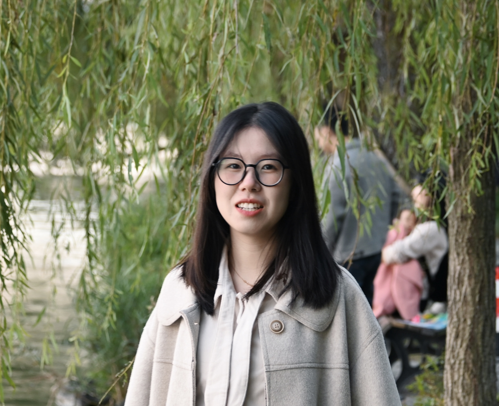

Yuqian Yuan 袁瑜谦PhD StudentZhejiang University Email: yuanyuqian@zju.edu.cn
|
 |
About me
I'm currently a PhD student in Zhejiang University, advised by Prof. Wenqiao Zhang and Prof. Jun Xiao. Previously, I was also advised by Prof. Jianke Zhu. My research focuses on advancing Visual Understanding, Vision-Language Models and Embodied AI, particularly in:
- Fine-grained spatial-temporal understanding with VLMs: PixelRefer, VideoRefer, Osprey
- General VLMs for image/video understanding: VideoLLaMA 3, TokenPacker
- Embodied spatial understanding & reasoning & action: RynnBrain, RynnVLA-002, RynnEC, EOC-Bench, ECBench
Before, I mainly focus on the field of the techniques for object detection, image segmentaion under minimal human supervision, including label-efficient /weakly-supervised /un-supervised approaches.
News
- [2026.2]: We released RynnBrain, an embodied foundation model grounded in physical reality.
- [2025.11]: We released RynnVLA-002, a unified vision-language-action and world model.
- [2025.10]: We released PixelRefer, a new unified pixel-level MLLM framework for fine-grained regional understanding.
- [2025.9]: Our EOC-Bench is accepted by NeurIPS 2025.
- [2025.8]: We released RynnEC , a video MLLM specifically designed for embodied cognition tasks.
- [2025.6]: We released the EOC-Bench , an object-centric embodied cognition benchmark in dynamic egocentric scenarios.
- [2025.5]: One paper, TokenPacker is accepted by IJCV 2025.
- [2025.4]: Our VideoRefer and VideoRefer-Bench have been discussed and adopted by NVIDIA & UC Berkely in their DAM work.
- [2025.2]: Two papers are accepted by CVPR 2025.
- [2025.2]: We released the VideoRefer-700K dataset on HuggingFace. Please see the VideoRefer Suite for the details.
- [2025.1]: We released VideoLLaMA3, frontier multimodal foundation models for both image and video understanding.
Publications&Preprints


[Paper] [Project Page] [Code] [HuggingFace] [LeaderBoard]

[paper]
[code]
[project page]

[paper] [code] [project page]


[paper]
[code]
[video demo]
[知乎]

[paper]
[code]
[project page]
[知乎]


Research Intern
-
Alibaba DAMO Academy | Hangzhou | Jul.2024 - Present
Topic: Video understanding with MLLM, Embodied AI
Mentor: Xin Li, Lidong Bing -
 Ant Group | Hangzhou | Apr.2024 - Jul.2024
Ant Group | Hangzhou | Apr.2024 - Jul.2024
Topic: Image understanding with MLLM, Image Tampering Detection and Segmentation
Invited Talks
- Sept 19, 2025: REAL Lab @ ZJU. Topic: Fine-grained Pixel-level Understanding: From general scene to embodied.
- Jun 5, 2025: AI TIME. Topic: VideoRefer Suite: Advancing Spatial-Temporal Object Understanding with Video LLM.
- Jun 10, 2024: AntGroup. Topic: Frontier Multimodal Large Models.
Honors
- National Scholarship, 2021
- Silver Medal, China Collegiate Programming Contest for Girls, 2021, 2020
- Honorable Mention, The 45th ICPC Asia Regional Contest, 2021
- Best Girl's Team, Jiangsu Collegiate Programming Contest, 2021
- The 17th place, China Collegiate Programming Contest for Girls, 2020
- Second Prize, The 11th "Blue Bridge Cup" National Software Competition Final, 2020
| © Yuqian Yuan | Last update: Oct 2025 |